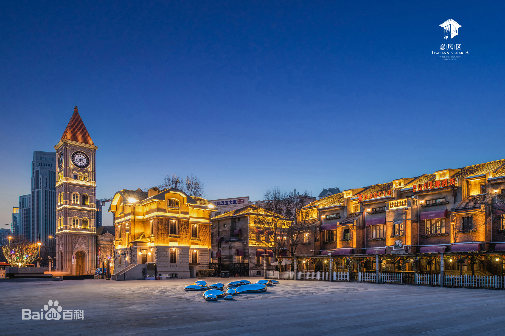
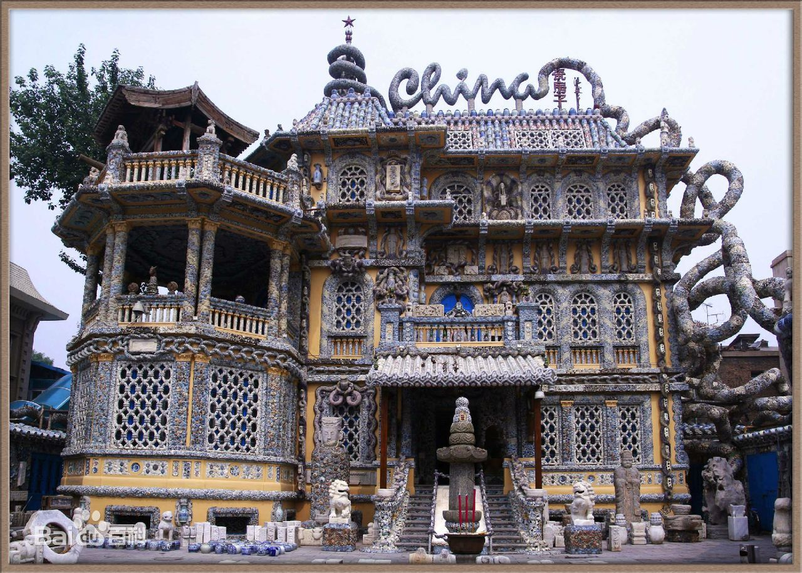
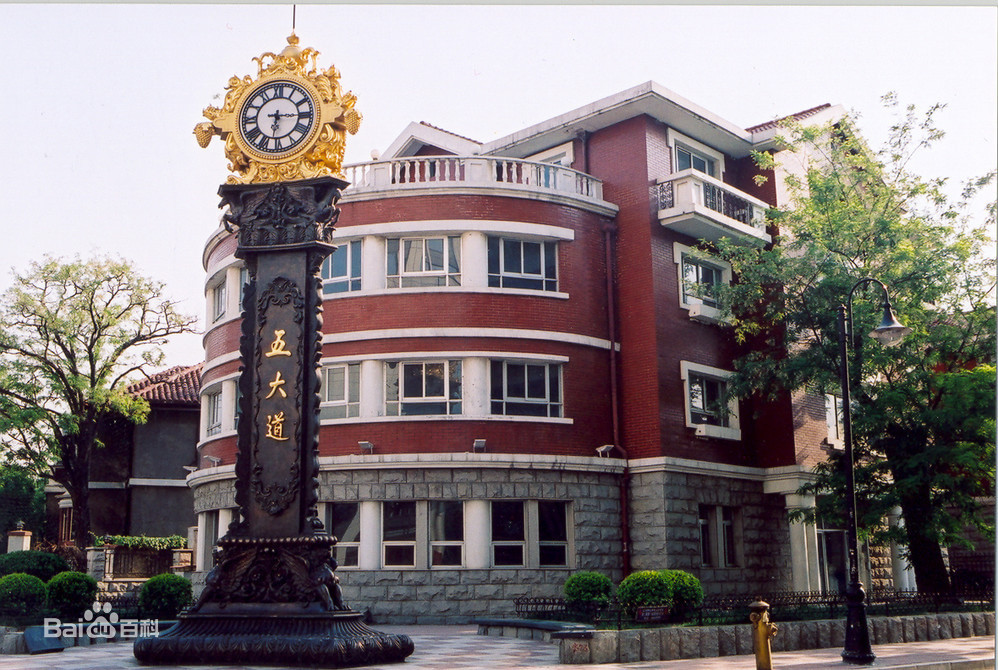

7月1日
目录
景点
-
意式风情区
路线
- 地铁2号线 天津站 => 建国道 (1站)
- 步行 地铁建国道站 => 意式风情区 (约520米)
-
简介
天津意式风情区坐落于海河之滨，地处天津市河北区，是由五经路、博爱道、胜利路、建国道合围而成的四方形地区，占地28.45公顷，区内拥有保存完整的百年历史欧洲建筑一百余座，是天津市河北区内具有意大利风情的旅游风景区。
意式风情区内包含河北区进步道、民族路、民主道、民生路、自由道、光复道、光明道等多条道路，是意大利在境外唯一的租界，亦是一处具有意大利风格的大型建筑群。有梁启超、曹禺、张廷谔、曹锟、袁世凯、齐耀珊、张学铭、曾国藩家族、冯国璋、李叔同、汤玉麟、卢鹤绂、王卓然、刘髯公、程克、鲍贵卿、华世奎、易兆云、李廷玉、张鸣岐、李文田、章宗祥、孙良诚、倪嗣冲、段芝贵、王一民、王郅隆、黄郛、曹锐、卢木斋、郑诵先、黎元洪、安文忠、杨以德、齐耀琳、吕调元、靳云鹏、龚心湛、王占元等多处中国名人故居。
2011年，天津意式风情区被我国唯一商业街工作权威机构——中国步行商业街工作委员会授予“中国特色商业街”称号。
-
图片
意大利风情区天津市·河北区
-
瓷房子
路线
- 步行 意式风情区 => 地铁津湾广场站 (约919米)
- 地铁3号线 津湾广场 => 和平路 (1站)
- 步行 地铁和平路站 => 瓷房子 (约374米)
-
简介
瓷房子位于天津市和平区赤峰道72号，它是一幢举世无双的建筑，它的前身是历经百年的法式老洋楼，它的今生是极尽奢华的“瓷美楼奇”。
该建筑被人们称为：一座价值连城的“中国古瓷博物馆”。这座“瓷房子”是天津市赤峰道一座用多件古董装修而成的法式洋楼，由瓷房主人张连志亲自设计。瓷房子建在天津和平区赤峰道上。赤峰道东起海河，西到墙子河，横贯原来的法租界。
2020年2月，为致敬奋斗在抗疫一线的医务工作者，自疫情结束恢复营业后至2020年12月31日，对全国医务工作者实行免门票。截止2020年底，已有9696名医护人员免票参观瓷房子。
-
图片
瓷房子天津市·和平区
-
五大道
路线
- 步行 瓷房子 => 地铁和平路站 (约374米)
- 地铁3号线 和平路 => 营口道 (1站) 换乘 地铁1号线
- 地铁1号线 营口道 => 小白楼 (1站)
- 步行 地铁小白楼站 => 公交香港路站 (约92米)
- 公交685路 香港路 => 湛江路 (3站)
- 步行 公交湛江路站 => 五大道 (约555米)
-
简介
五大道在天津市中心城区，是一个以由南向北并列着的马场道、睦南道、大理道、常德道、重庆道这五条道路为主的一个街区的统称。以“马睦大常重”为主的这个街区，是迄今天津乃至全中国保留最为完整的洋楼建筑群，天津人把它称作“五大道”。
五大道地区拥有上世纪二、三十年代建成的具有不同国家建筑风格的花园式房屋2000多所，建筑面积达到100多万平方米。其中最具典型的300余幢风貌建筑中，英式建筑89所、意式建筑41所、法式建筑6所、德式建筑4所、西班牙建筑3所、还有众多的文艺复兴式建筑、古典主义建筑、折衷主义建筑、巴洛克式建筑、庭院式建筑以及中西合璧式建筑等，被称为万国建筑博览苑。
2011年，五大道被天津市规划局确定为五大道历史文化街区。
-
图片
五大道天津市·和平区